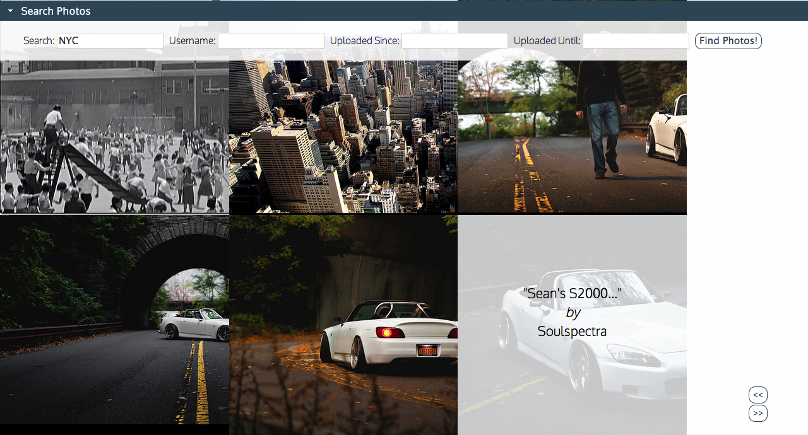

P R O J E C T S
A small gallery of Computer Science projects I have completed.Super Smash Brothers
Java
PC adaptation of Nintendo's Super Smash Brothers using the Ucigame Java graphics package to animate characters.
Binomial Calculator
Java
An efficient application designed to evaluate mathematical expressions using various data structures such as binary search trees and stacks.
Personal Website
HTML/CSS, JavaScript
Reflects the most recent web design technologies I teach myself, a place to apply new skills as I learn them.
HTML/CSS, JavaScript
Reflects the most recent web design technologies I teach myself, a place to apply new skills as I learn them.

Kookopa
HTML/CSS, JavaScript, Liquid
Adapt ecommerce platform (Shopify) to support a growing customer base with the launch of a new subscription service; use data and algorithms to customize Kookopa’s user experience; redesign website for friendly and easy user interaction (e.g. social media integration)
HTML/CSS, JavaScript, Liquid
Adapt ecommerce platform (Shopify) to support a growing customer base with the launch of a new subscription service; use data and algorithms to customize Kookopa’s user experience; redesign website for friendly and easy user interaction (e.g. social media integration)

Flick Find
HTML/CSS, JavaScript
A web application that allows users to refine a search in the Flickr database by specifying tags, usernames, and dates using Flickr's API. Implements responsive designs and utilizes HTML5/CSS3.
HTML/CSS, JavaScript
A web application that allows users to refine a search in the Flickr database by specifying tags, usernames, and dates using Flickr's API. Implements responsive designs and utilizes HTML5/CSS3.